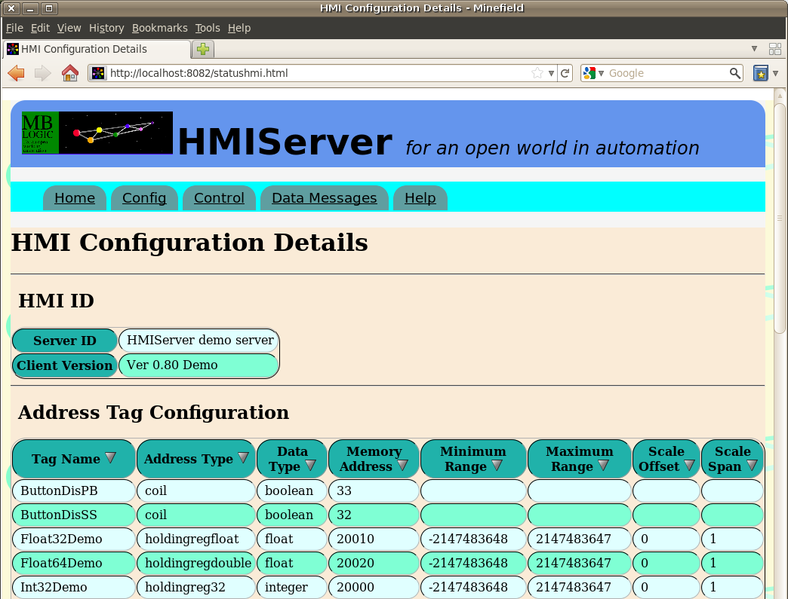
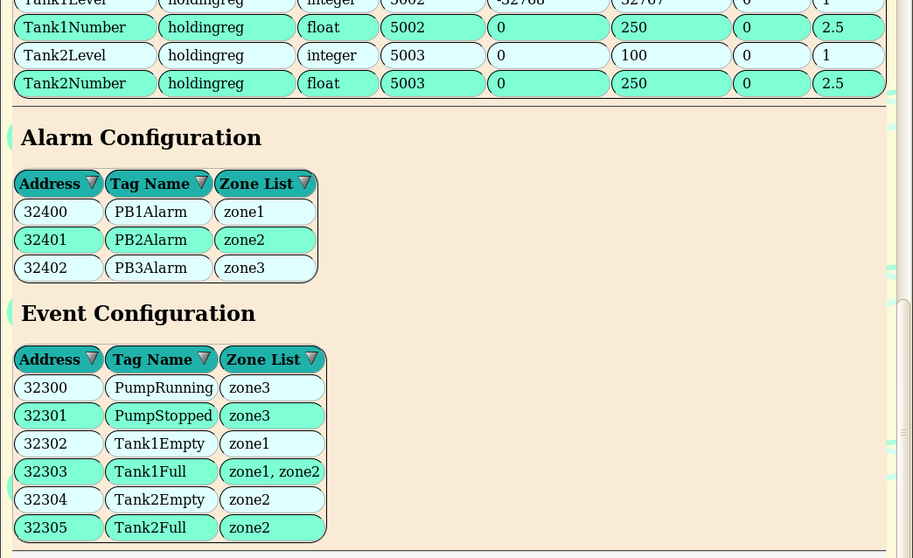
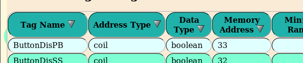

HMIServer
Help
HMIServer
Help
Help - HMI Monitoring
Overview:
The HMI server offers the ability to monitor the following features:
- System Status - The current status of the system
- Config - The current HMI configuration parameters
- Control - Shut down and parameter reload.
- Data Messages - Communications data messages.
- Help - On line help and documentation.
In addition to the above, an older "static" version of the status monitoring system is also available.
System Status
The "System Status" page displays the present operating status of the system. It polls the server via the web interface (using the same port as the HMI page) for data and updates the page whenever that data changes. The updates are performed directly in the page, not by reloading the page (this is commonly known as "AJAX").

The following information is displayed:
General System Parameters
- System Name - The "serverid" parameter from the configuration file.
- Software - The software version. This indicates the protocol and type (client or server).
- Version - The software version.
- Started at - The time the system was started.
- Uptime (hrs) - The number of hours since the system was started.
- Config - This indicates if the hmi configuration was OK or if errors were present.
- Server Comms - This indicates if communications to the field device are OK.
- Status Monitor - This indicates if communications between the browser and the system is OK. A watchdog timer monitors the polling updates and times out if the browser lost contact with the web server.
Start Parameters (Server Protocols
- Client Web Port - The port used for the web server interface (the -p start parameter).
- Field Protocol Port - The port used for the field protocol (the -r start parameter).
Start Parameters (Client Protocols
- Client Web Port - The port used for the web server interface (the -p start parameter).
- Remote Host - Name or address of remote field server (the -h start parameter).
- Remote Port - Port number of remote field server (the -r start parameter).
- Timeout (sec) - Timeout for remote communications (the -t start parameter).
- Unit ID - Unit ID of remote Modbus server (the -u start parameter).
HMI Web Pages
This lists all the web pages (HTML or XHTML) found in the "hmipages" directory.
Config
This displays the current HMI configuration data.


The data columns may be sorted by clicking on the column headings.

Control
The control page provides the ability to reload the HMI configuration, and to shutdown the system.

Reload Config
Reloading the configuration will read the hmi configuration file from disk, and use the new configuration to replace the current one. This allows the configuration to be updated without stopping and restarting the system. After reloading a configuration, check the "System Status" or "HMI Configuration Details" pages for errors.
Shutdown System
This sends a shutdown command to the system requesting that it stop and exit immediately.
Data Messages
Either "HMI Protocol Messages" or "Field Data Messages" may be selected by selecting the "Data Messages" menu option. The default page is the "Field Device Messages" page. "Field Data Messages" may be selected from the link at the top of the "Field Device Messages" page.
HMI Protocol Messages:
The system keeps a temporary record of the most recent HMI requests and responses in a buffer. Selecting the "HMI Messages" menu will display these messages in a list, with the newest messages at the top, and the oldest at the bottom. These messages are in "raw" format, showing you the actual data being transmitted. This page can be useful in diagnosing communications problems between HMI clients (web pages) and the HMI server.
Field Data Messages:
The system keeps a temporary record of the most recent field device requests and responses in a buffer. Selecting the "Field Data Messages" menu will display these messages in a list, with the newest messages at the top, and the oldest at the bottom. These messages are in a processed format, showing you the contents of each message in human readable format. This page can be useful in diagnosing communications problems between the HMI server and the field device server acting as the source of the data.
Static Status Version
An older version of the status system is available as an alternative for browsers which do not support the necessary Javascript features or for cases where Javascript must be turned off. These are simple "static" web pages. This static version is considered to be obsolete and will eventually be removed.

Status and Configuration Page
This displays the current status and the HMI configuration. The fields are the same as those in the dynamic versions. The information displayed is not automatically updated. To update the information, reload the web page (e.g. press the "F5" key). This page is available as:
http://localhost:8082/hmiserverstatus-en.html
HMI Messages
This displays the HMI protocol messages.
Field Data Messages
This displays the field device protocol messages.